The island of perfumes, turquoise waters and unforgettable adventures.
Explore Nosy BeLocated in the northwest of Madagascar, Nosy Be is one of the country's most beautiful destinations. Famous for its tropical beaches, crystal-clear waters, marine biodiversity and unique wildlife, the island offers unforgettable experiences for travelers seeking nature, culture and adventure.
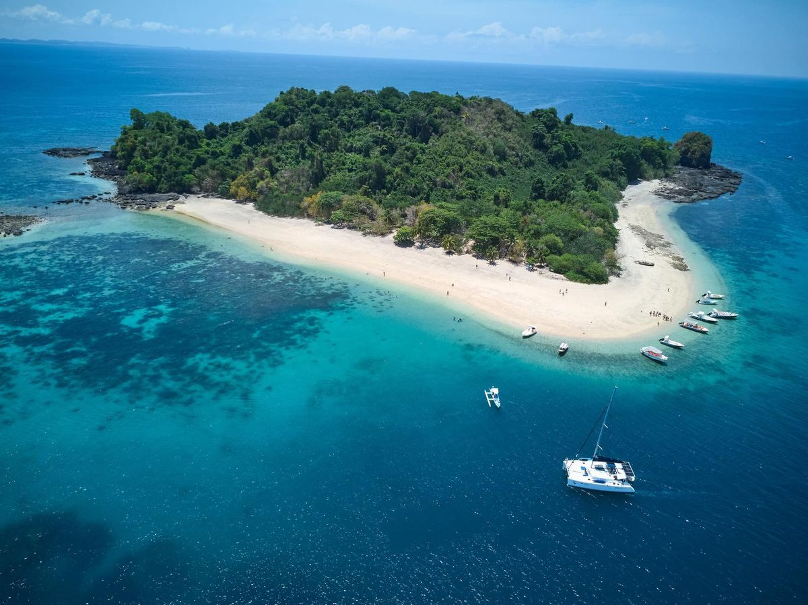
A protected marine reserve with colorful coral reefs, tropical fish and excellent snorkeling spots.
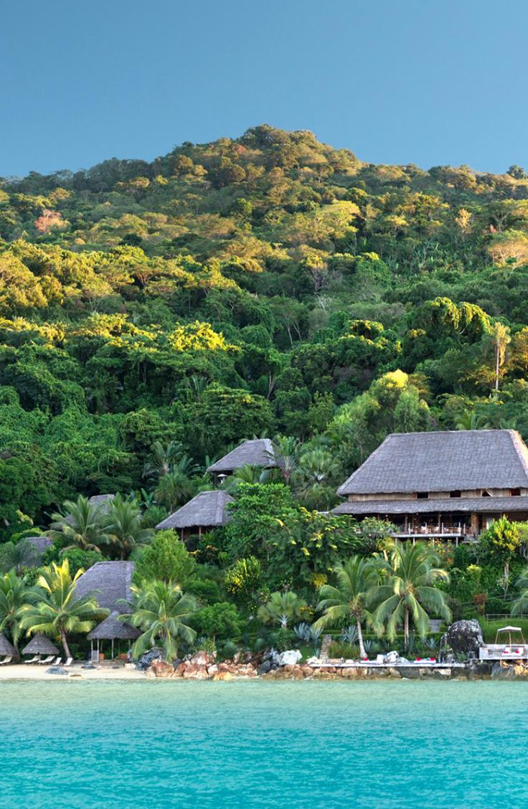
The island of lemurs, where you can discover local culture and observe fascinating wildlife.
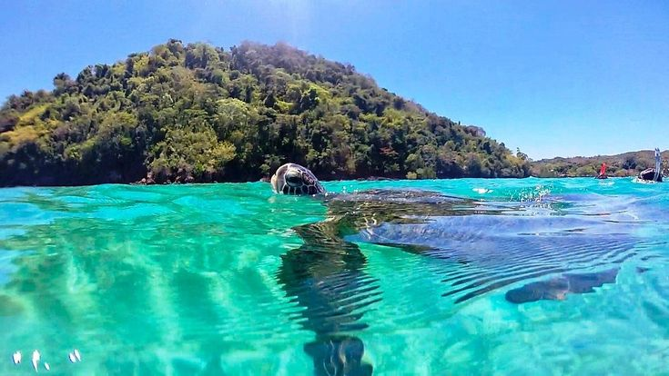
A peaceful island famous for its beautiful beaches and encounters with sea turtles.
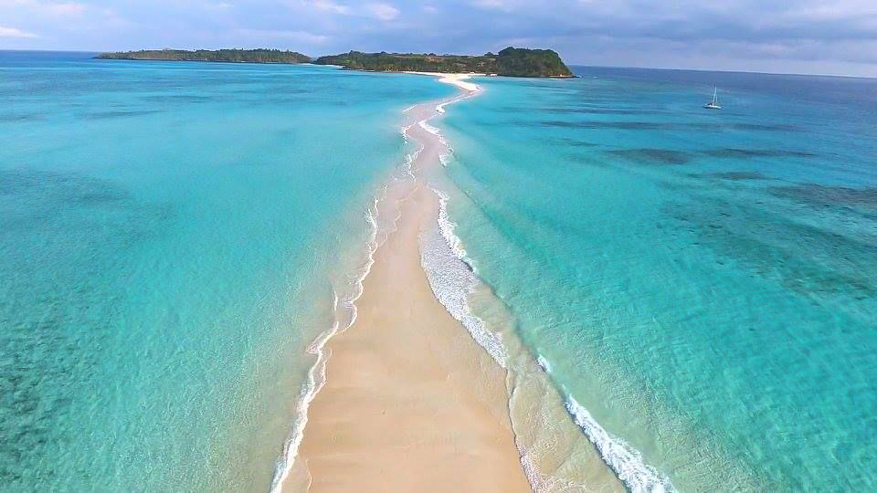
A stunning double island linked by a sandbank that appears at low tide, famous for nesting sea turtles and postcard-perfect beaches.
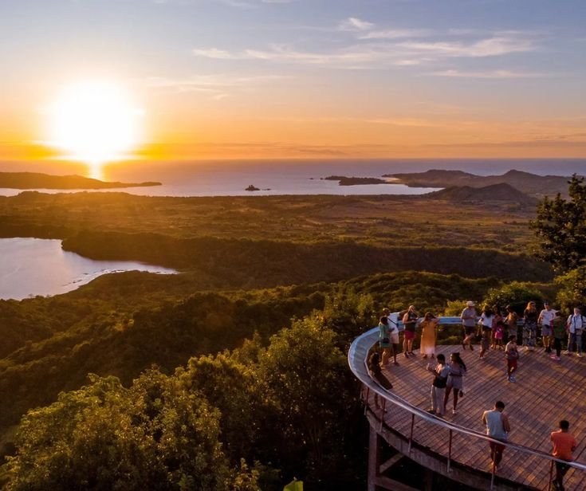
The highest point of Nosy Be, offering breathtaking panoramic views over the crater lakes and the surrounding ocean, especially at sunset.
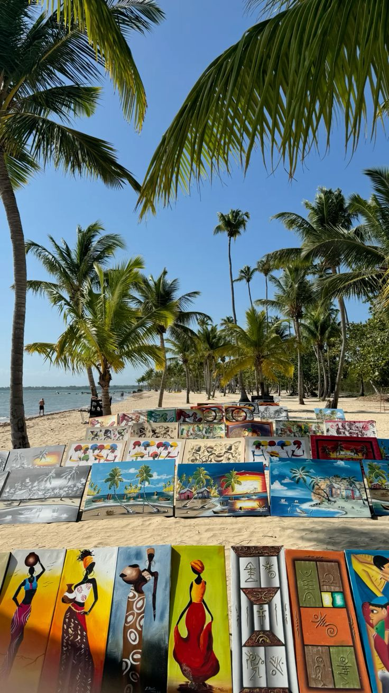
One of Nosy Be's most beautiful beaches, with soft white sand and calm turquoise waters, perfect for swimming and relaxing.
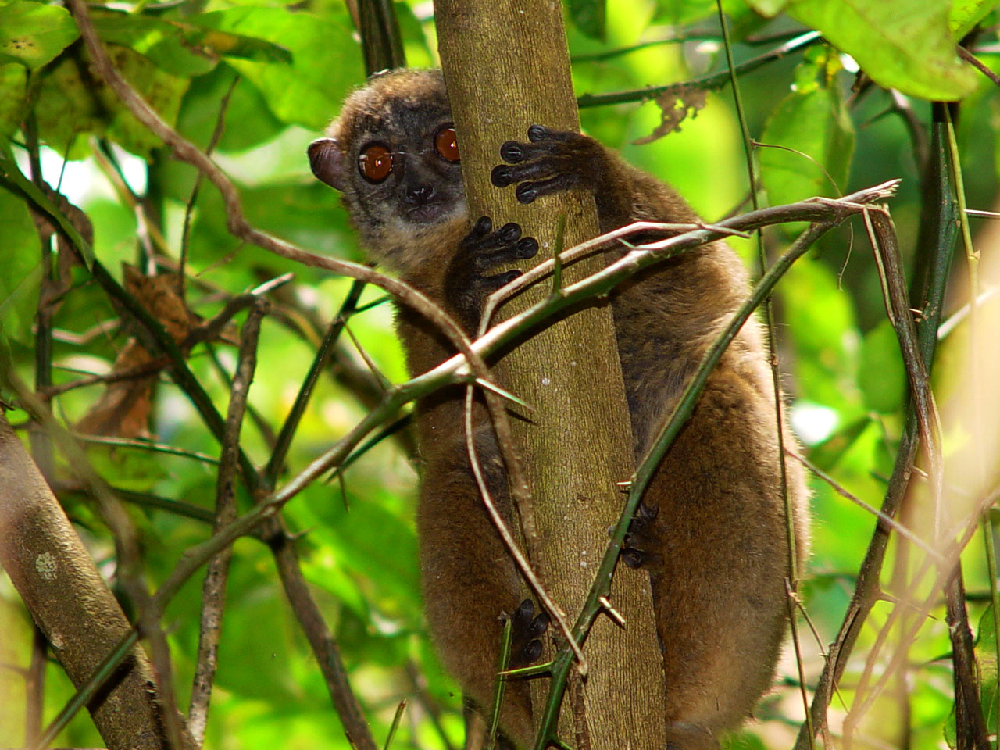
A protected rainforest reserve, home to the black lemur, chameleons and endemic plants, reachable by traditional pirogue.
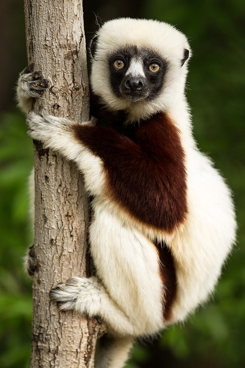
A private reserve where visitors can observe several species of lemurs up close in a natural forest setting.
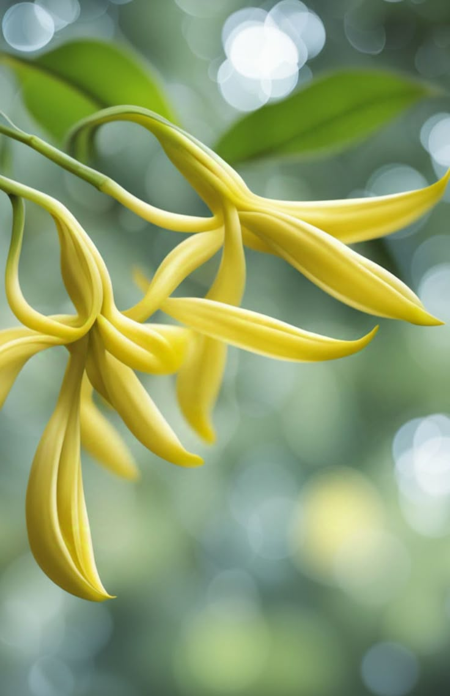
Discover the traditional process of extracting ylang-ylang essential oil, the signature scent behind Nosy Be's nickname, "Island of Perfumes".
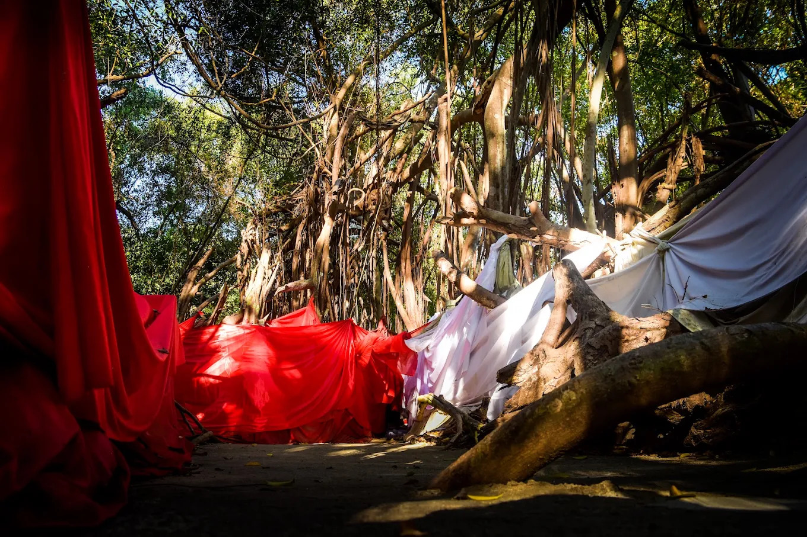
A centuries-old sacred tree considered a spiritual site by local communities, steeped in Malagasy legends and traditions.
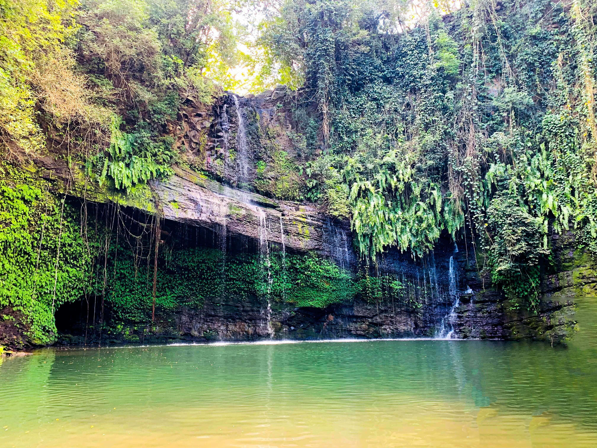
A tranquil waterfall nestled in the forest, believed by local communities to hold spiritual and healing properties.
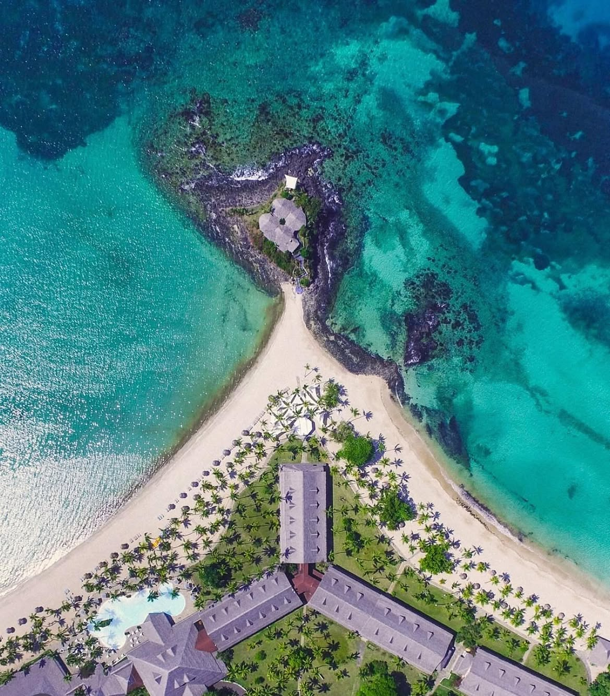
A guided tour through Hell-Ville, the island's main town, discovering its colonial architecture, local markets and vibrant daily life.
Contact Ma'Tour Guide Madagascar and create your unforgettable journey.
Contact WhatsApp